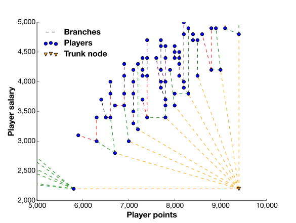

Sports Algorithm
Algorithm development for fantasy sports
I worked with Lineup Lab, a fantasy sports website, to develop a custom algorithm that underpins a new premium product range.
Skills employed: Algorithm design, Mathematics, Python, (numpy, scipy), Cython, TDD, project design, Linux
A visualisation of a tree, the type of algorithm developed for Lineup Lab. Here, each node is a better choice than the nodes behind. The colour shows the depth of the tree from the trunk node.
Helping find the best fantasy sports team
Lineup Lab is a website that helps fantasy sports players calculate the players for their optimal fantasy teams for basketball and American football each day.1
Lineup Lab is part of the new fantasy sports market, which only came into existence in 2009. Now, 6 years later, it is at least a billion dollar market and looks set for continued rapid growth.
Challenge
Lineup Lab had an algorithm that could generate the best teams from any 50 players in a given sports league. As part of a new premium product, they required an algorithm that would find the best teams using all the players in a given sport league, up to 350 players in 9 positions, in a few seconds. This would provide their users with a comprehensive selection of the best teams for use in fantasy sports.
There are trillions of possible teams with all the players considered, and a direct computation of this would take more time and computational resources than they had.
(The problem is a variant of “the multiple choice knapsack problem”, a problem that, in this case, is known to be NP-hard.)
Solution
I designed and implemented the algorithm to solve this problem. After researching known solutions in the literature, I wrote a simple proof of principle using the test data, prototyped a version of this using Python and implemented a full speed version using the Python libraries numpy and itertools.
The final algorithm was a tree-based algorithm, using multiple interacting trees of players and positions, exploiting many features of the data; as an example, any player with a lower salary and higher points value would be picked first. This arrangement was also true of knapsacks and sub-combinations of knapsacks. The solution also involved combinatorics and conventional code optimisations.
Results
While the initial algorithm worked on all the test data, it was later found to sometimes slow down during testing on the development server against real-world data, no longer providing an answer quickly enough for Lineup Lab's use. I provided an updated solution based on this new data, which consistently solved the problem in the required time. After a final round of testing, adding features and bug fixes, we were happy with the performance and reliability of the algorithm.
The algorithm was then deployed to the live server during the product release, underpinning all the solutions produced by the website, and has performed reliably ever since.
We went on to work together on another set of sports and adding additional features to the algorithm.
1. To win in fantasy sports the user must build a team with the highest possible "points" after a series of games - for example, in football a player who scores more goals would gain more points.
Each user has a certain budget to buy players for their team, with each player having a price, based on their previous performance. Each player also has a corresponding statistical projection of their success, from other sources.
Using Lineup Lab, the user can find the best team for a given budget, using these statistical scorings.↩